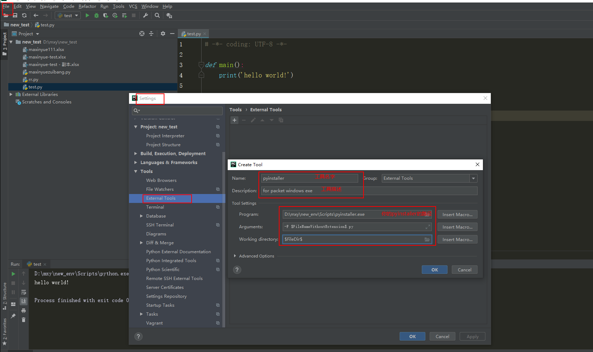
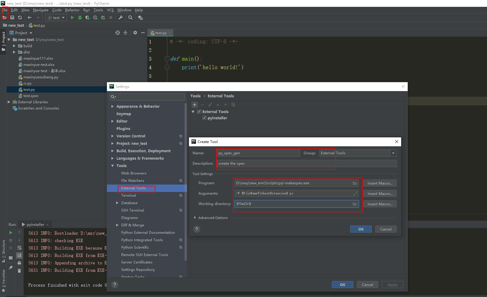
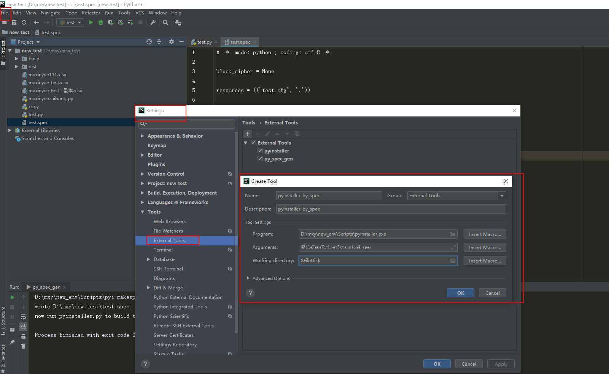
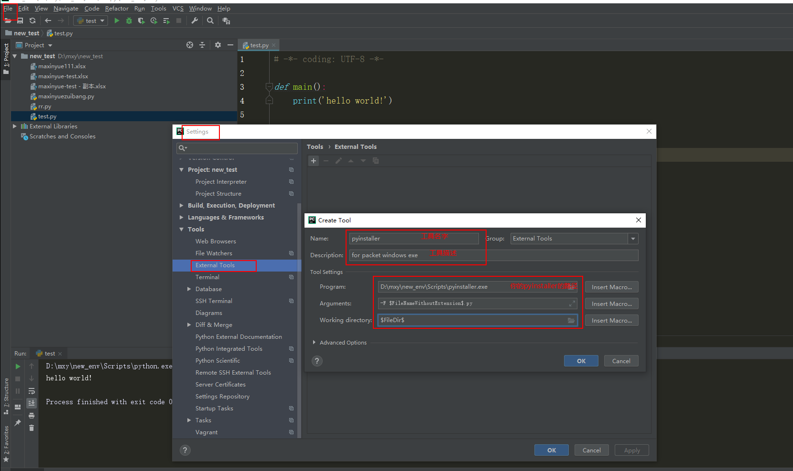
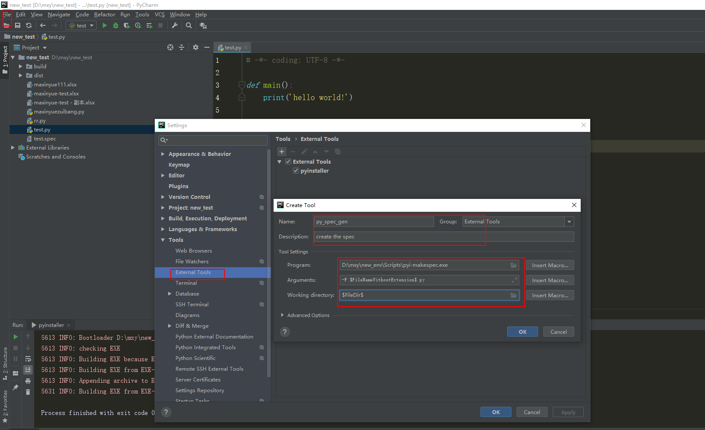
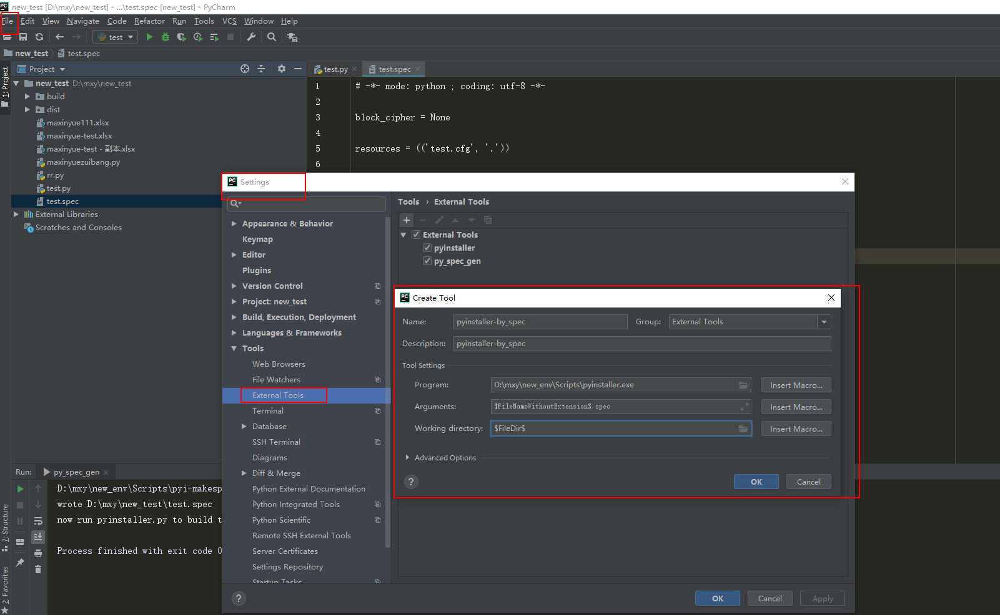

快捷键- ctrl+alt+L 格式化代码
插件ideavim- 再在
keymap-Plugins- IdeaVim 给 Vim Emulator设个快捷键，正常模式和 Vim 模式无缝切换
- 再在
keymap-Plugins-IdeaVim给Vim Emulator设个快捷键，正常模式和 Vim 模式无缝切换
Pycharm中的pyinstaller打包C:\Users\nuohe\AppData\Roaming\Python\Python310\Scripts\pyinstaller.exe参考资料
External tool 的使用方法spec文件配置无resources
- project 加载pyinstaller包
- 同样是设置，
Tools - External Tools, 创建一个pyinstaller外部工具-F $FileNameWithoutExtension$.py$FileDir$ - 然后在main代码里右键external tools
有resources
- 将生成spec的
pyi-makespec.exe 生成external tool-F $FileNameWithoutExtension$.py$FileDir$ - 添加使用指定spec的pyinstaller工具$FileNameWithoutExtension$.spec$FileDir$
 - 修改spec文件，主要是改datasdatas 是一个装着tuple的list, tuple里是资源文件，格式是 (项目中的路径，打包后的路径）

- 在main代码里先运行
pyi-makespec 再运行 pyinstaller_by_spec
C:\Users\nuohe\AppData\Roaming\Python\Python310\Scripts\pyinstaller.exe
参考资料
External tool 的使用方法
spec文件配置
无resources
- project 加载pyinstaller包
- 同样是设置，
Tools - External Tools, 创建一个pyinstaller外部工具-F $FileNameWithoutExtension$.py$FileDir$ - 然后在main代码里右键external tools
有resources
- 将生成spec的
pyi-makespec.exe生成external tool-F $FileNameWithoutExtension$.py$FileDir$ - 添加使用指定spec的pyinstaller工具$FileNameWithoutExtension$.spec$FileDir$
 - 修改spec文件，主要是改datasdatas 是一个装着tuple的list, tuple里是资源文件，格式是 (项目中的路径，打包后的路径）
- 在main代码里先运行
pyi-makespec再运行pyinstaller_by_spec